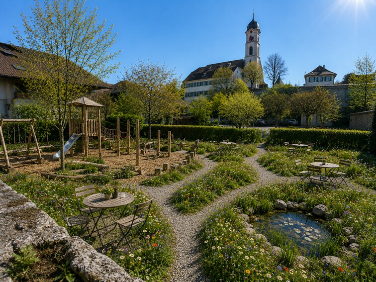

Im historischen Müllerhof in Frick verbinden wir vier Welten unter einem Dach — regional, authentisch und mit Liebe zum Detail.
«Wo Geschichte auf Gastfreundschaft trifft — und jeder Moment seinen Platz findet.»
Der Orbis Müllerhof ist mehr als ein Haus. Er ist Treffpunkt, Rückzugsort und Bühne für gelebte Momente. Unter unserem historischen Dach finden Sie ein gemütliches Hotel, ein feines Restaurant, eine moderne Kantine für die Region und stilvolle Seminarräume für inspirierende Anlässe.
Was uns verbindet? Der Anspruch, dass jeder Gast — ob auf der Durchreise, zum Mittagessen oder für ein Seminar — sich willkommen fühlt. Wie in einem Kreis, in dem alles seinen Platz hat.
Saisonale Küche und gemütliches Café-Buffet.
Entdecken →Inspirierende Räume für jeden Anlass.
Entdecken →Komfortable Zimmer mit historischem Charme.
Entdecken →Frisch, regional und einfach gut.
Entdecken →Sammeln Sie Punkte in allen vier Bereichen — beim Mittagessen, bei einer Hotelübernachtung oder einer Seminarbuchung — und lösen Sie diese flexibel ein. Eine Karte. Alle Welten.
Physisch oder digital. Keine App, kein Login.
Treueprogramm
Ein Ort. Viele Momente.

Der Müllerhof — seit Generationen ein Ort, an dem sich Menschen treffen. Heute öffnen wir ihn unter dem Namen Orbis neu: behutsam saniert, modern ergänzt und immer noch tief mit seiner Geschichte verbunden.
Hier verbinden wir das Beste aus beiden Welten — historische Substanz und zeitgemässer Komfort. Eine Bühne für gelebte Momente, mitten in Frick.
Mehr über unsSchulstrasse 11
5070 Frick
Mo–Mi · 07:00–17:00
Do–Sa · 07:00–22:00
So · 07:00–17:00